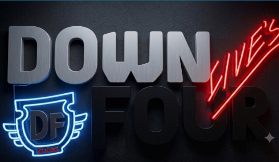
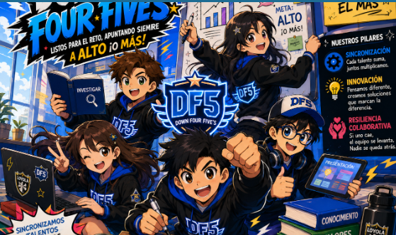

Descripción
Down Four Five’s es un equipo de trabajo de alto rendimiento escolar que destaca por su dinamismo, versatilidad y enfoque en la excelencia. El nombre refleja su filosofía de juego: estar “Down”: listos y comprometidos con el reto; “Four Five’s”: persiguiendo siempre la calificación máxima, el puntaje perfecto y más.
No son un grupo que simplemente se “reparte las partes” para pegarlas al final; operan como un sistema integrado. Su identidad se basa en tres pilares:
- Sincronización: Aprovechan las habilidades individuales (el que investiga, el que expone, el que diseña) para potenciar el resultado final.
- Mentalidad de Innovación: Fieles al espíritu del Loyola, buscan siempre dar el Magis (el más), aportando soluciones creativas e investigativas que van más allá de lo evidente.
- Resiliencia Colaborativa: Si un miembro flaquea o tiene dificultades, el equipo no lo señala; se reorganiza rápidamente para apoyarlo, asegurando que nadie se quede atrás.